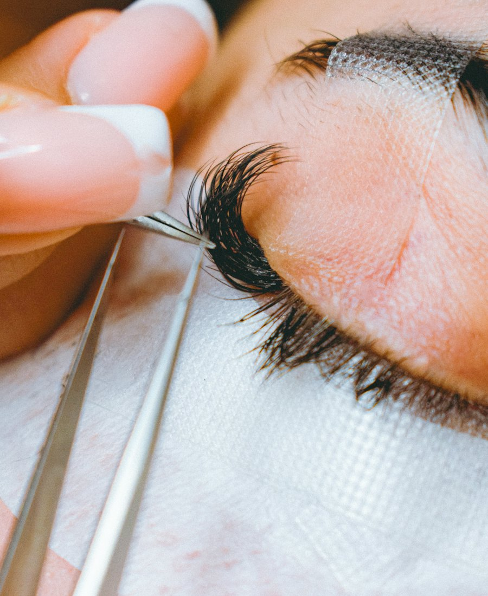
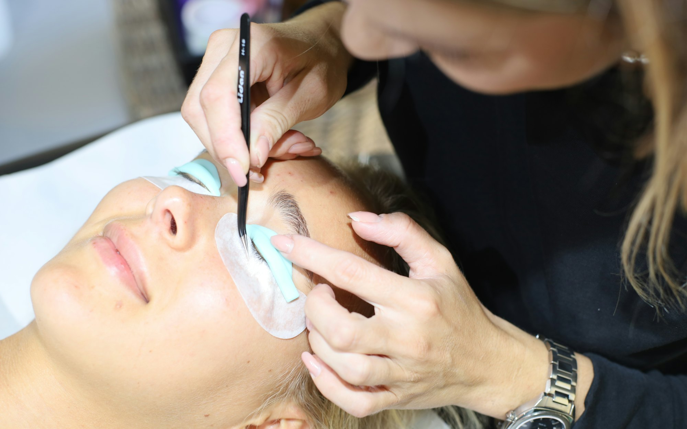
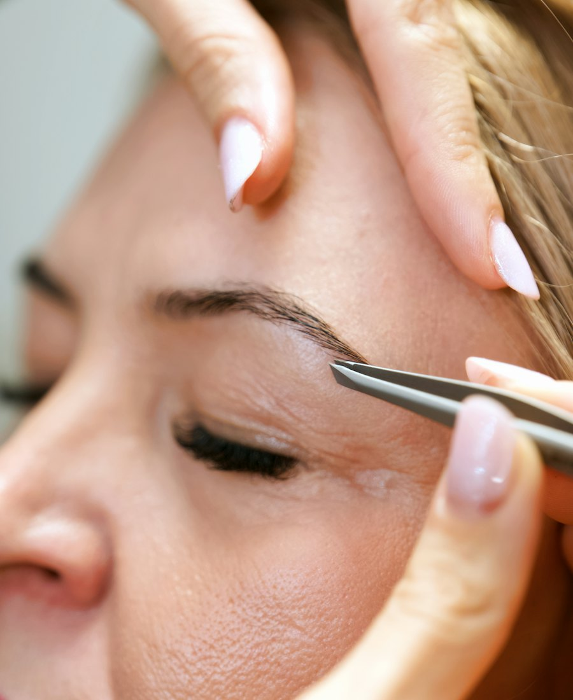
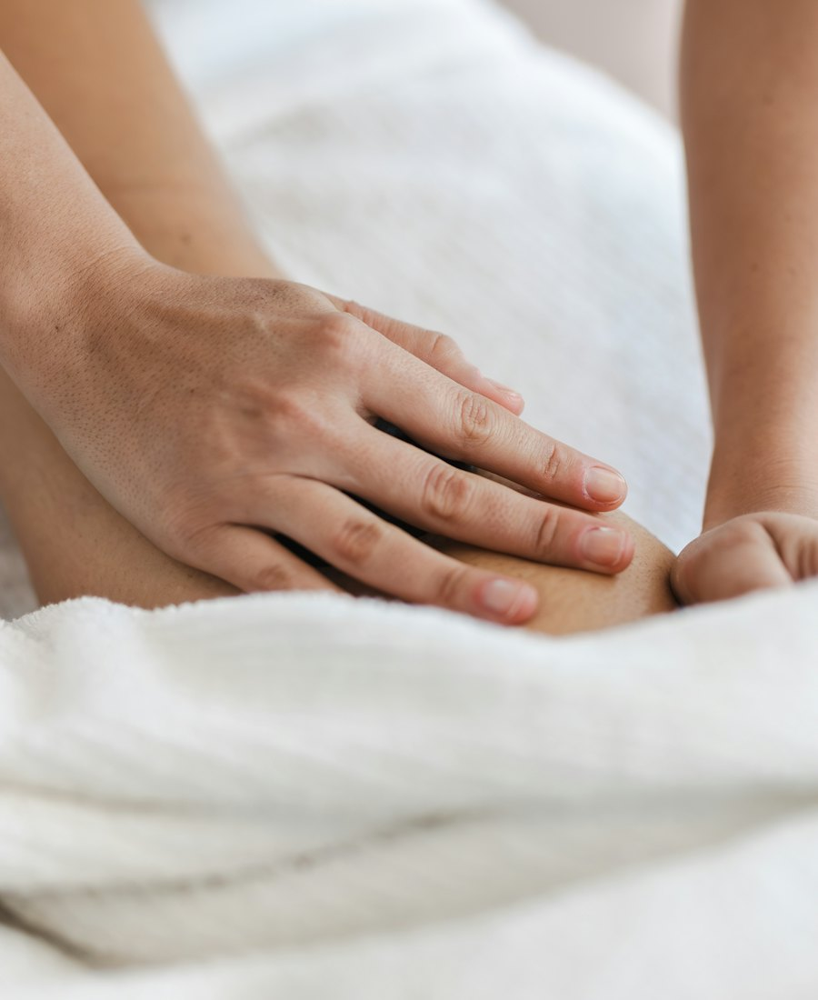
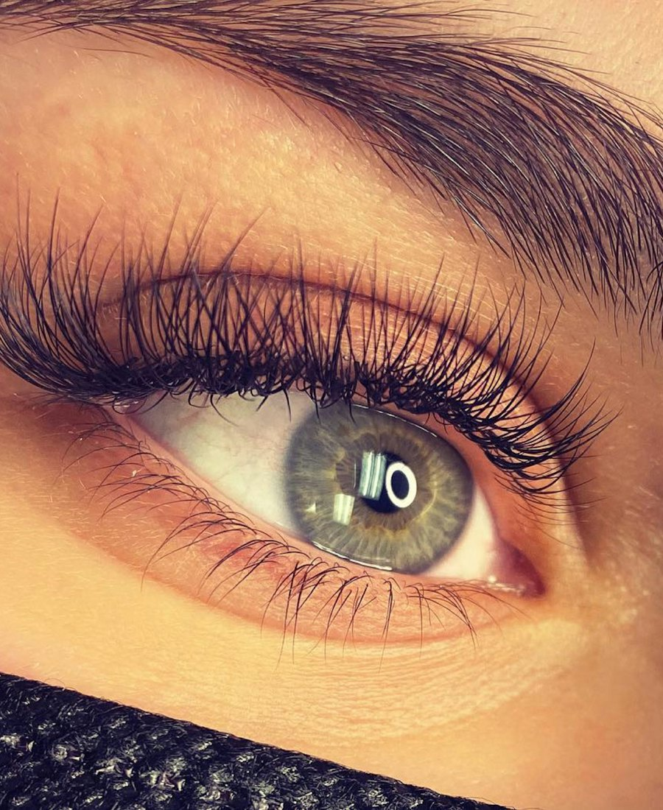
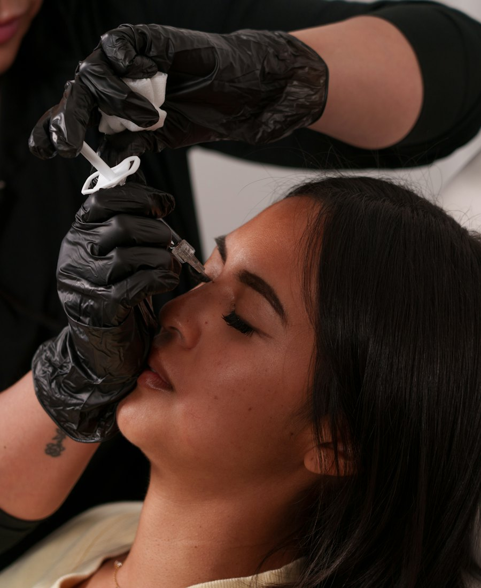
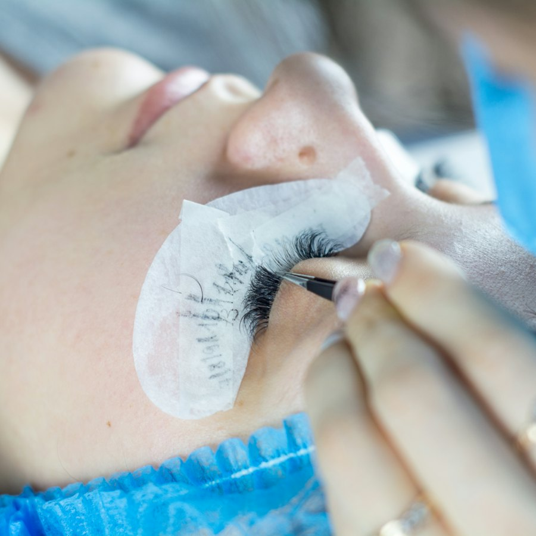
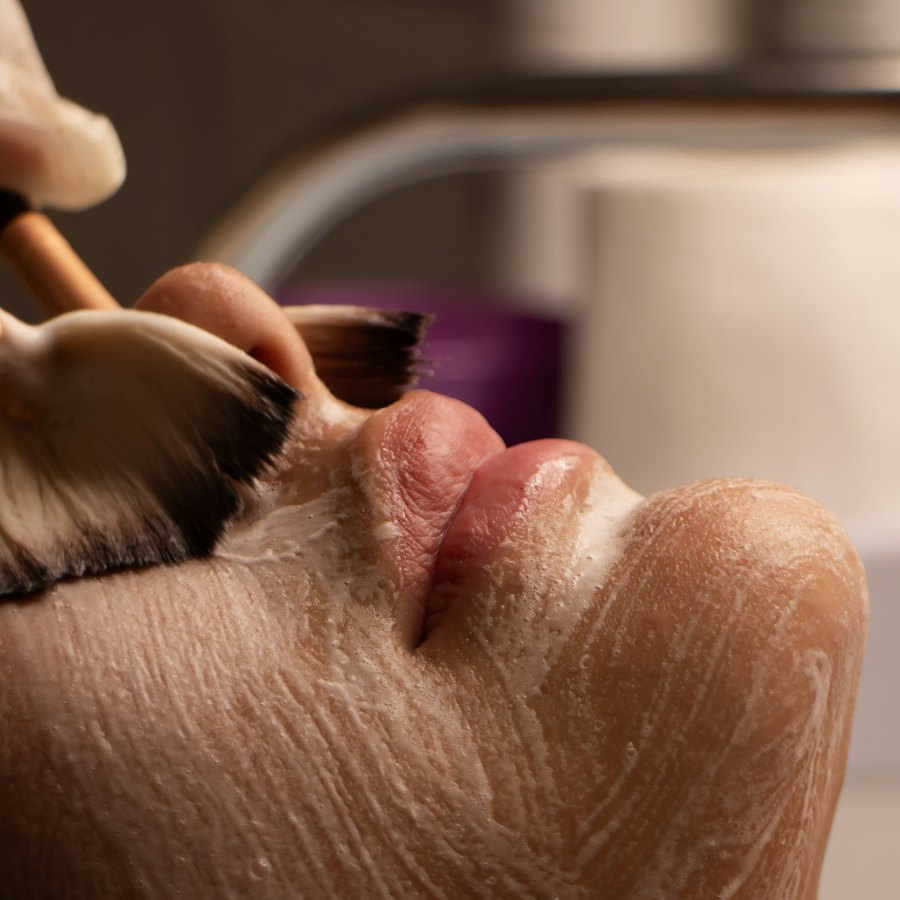
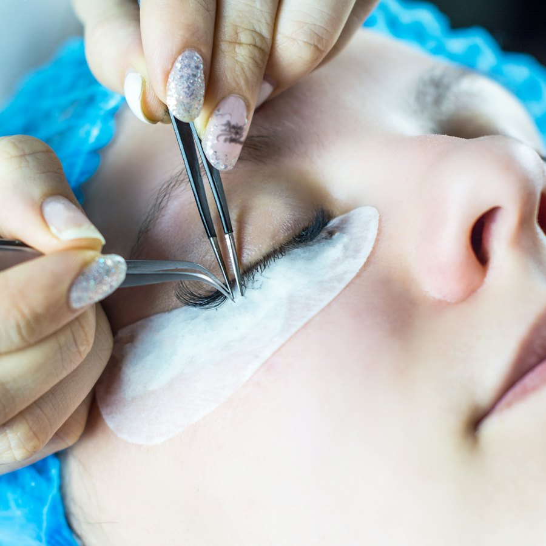
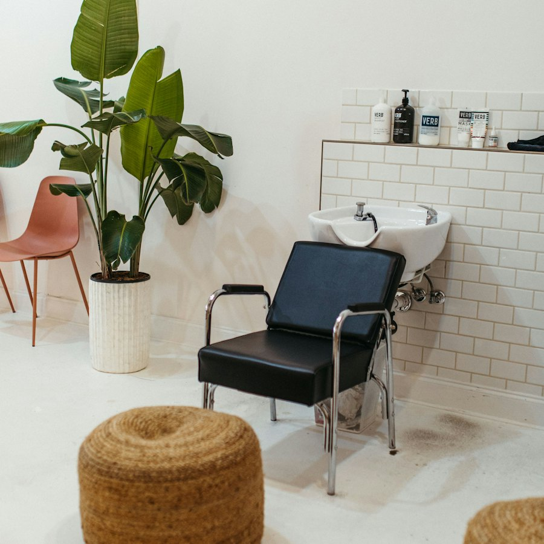

Lash lifting
Curva e levanta os seus próprios cílios, sem extensão e sem rímel.
Perguntar no WhatsApp
Gabi Stephan
Lash lifting, design de sobrancelhas e estética facial e corporal em Araras/SP, com a Gabi, graduada em Estética e Cosmetologia.
4.327 seguidores acompanham a Gabi no Instagram
Mais de 4 mil pessoas já acompanham o trabalho da Gabi com cílios, sobrancelhas e pele.
São 269 publicações em @gabistephan.estetica, com atendimentos novos postados neste mês de novembro.
Ver o InstagramOs quatro atendimentos da bio da Gabi. Toque no serviço para perguntar direto no WhatsApp.

Curva e levanta os seus próprios cílios, sem extensão e sem rímel.
Perguntar no WhatsApp
Desenho pensado para o formato do seu rosto e do seu olhar.
Perguntar no WhatsAppCuidados com a pele do rosto, de acordo com o que ela precisa.
Perguntar no WhatsApp
Protocolos para o corpo, combinados com você na avaliação.
Perguntar no WhatsAppDescrições de exemplo e fotos ilustrativas. No site final entram os procedimentos, valores e fotos dos atendimentos da Gabi.

O lifting trabalha os fios que você já tem: eles saem da sessão curvados para cima, deixando o olhar mais aberto.
Os cílios são higienizados para receber o produto.
Os fios são posicionados um a um no molde de silicone.
A curvatura é fixada no tempo certo para o seu tipo de fio.
Finalização que cuida dos fios e realça a curva.
Texto de exemplo. No site final entram as etapas e os cuidados do jeito que a Gabi faz.
A Gabi atende em Araras e divide o trabalho entre o olhar, com lash lifting e design de sobrancelhas, e a pele, com estética facial e corporal.
Cada atendimento começa por uma conversa sobre o que você quer e termina com as orientações para manter o resultado em casa.
Texto de exemplo. No site final entram a história da Gabi e fotos dela e do espaço.






Fotos ilustrativas. No site final entram fotos reais dos atendimentos, tiradas do Instagram da Gabi.
A Gabi atende em Araras/SP. Chame no WhatsApp para combinar o dia e receber o endereço.
O endereço completo e os horários entram no site final.
Mande uma mensagem e a Gabi responde com os horários livres da semana.